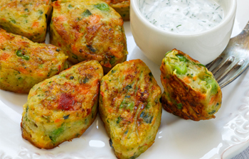

MALZEMELER:
2 kâse rendelenmiş kabak (yaklaşık 2 orta boy kabak)
1/2 kâse tam tahıllı ekmek kırıntıları
1 kâse rendelenmiş kaşar peyniri
1/2 kâse ince doğranmış yeşil soğan
2 yemek kaşığı kıyılmış dereotu
1 çay kaşığı sarımsak tozu
HAZIRLANIŞI:
1. Fırını 200 oC’ye ayarlayın. Parşömen kâğıdı ile fırın tepsisini kaplayın.
2. Büyük bir kapta kabak, ekmek kırıntıları, kaşar peyniri, yumurta, yeşil soğan, dereotu ve çeşniyi iyice birleştirilene kadar karıştırın.
3. 1 yemek kaşığı miktarınca elinize aldığınız karışımı yuvarlayın ve hepsi bitene kadar tekrarlayın. Kızarıncaya kadar -yaklaşık 30 dakika- fırınlayı